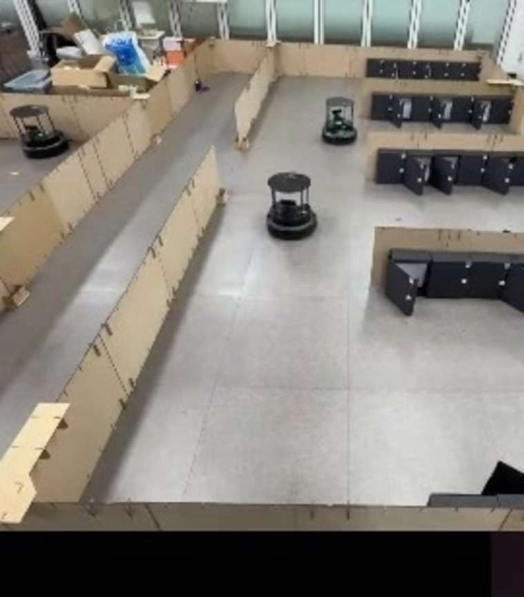
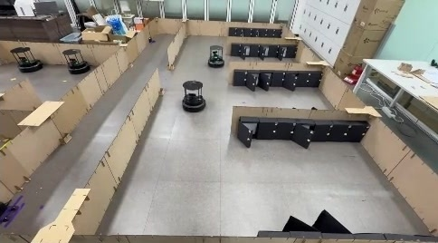

안녕하세요,
로봇 SW 개발자
황인재입니다
Vision · AI 판단을 로봇 동작으로 설계하고 통합합니다.

GitHub
github.com/hwang-injaeAbout me


ROKEY 9기 교육장에서, 2026도전은 많이 했지만,
로봇 SW는 달랐습니다
두산로보틱스 ROKEY 부트캠프에서 협동로봇(M0609 · P3020)과 AMR(TurtleBot4)로 Project 4건을 하며, Vision · AI가 판단한 결과대로 로봇이 움직이도록 Vision과 로봇을 연동했고, Project 초기 설계와 전체 기능 통합을 맡아 왔습니다.
화학을 전공했고 편입 · 전과 · 창업동아리까지 여러 길을 거쳤지만, AI를 로봇에 접목하는 일에서 처음으로 더 깊이 파고들고 싶다는 마음이 들었습니다. 배울수록 재미있어 매일 새벽같이 교육장에 나갔고, 계획한 기능이 실제 로봇에서 처음 움직이던 순간의 성취감과 벽을 넘어설 때의 짜릿함으로 여기까지 왔습니다.
기술은 빠르게 바뀝니다. 많이 아는 것 못지않게 새로 배운 기술을 우리 상황에 맞게 빠르게 적용하는 힘이 중요하다고 생각하고, 네 번의 Project에서 그것이 제 강점임을 확인했습니다. 문제가 생기면 코드 밖까지 원인을 하나씩 지워 나가고, 결과는 실제 동작으로 확인한 뒤에 반영합니다. 배운 것을 바로 써 보고 막히면 끝까지 원인을 찾는 이 자세로, 현장에서 실제로 움직이는 로봇 SW를 만들어 가겠습니다.
Projects
4건팀 운영
PL 1 · PM 2ROKEY 9기
6개월 수료My Journey
Education
국립부경대학교 화학과
졸업 예정
2017.03 – 2027.02두산로보틱스 ROKEY 부트캠프 9기
AI 로보틱스 엔지니어 양성과정 수료
2026.04 – 2026.10Projects
SortTwin
P3020 Pick & Place · Vision 연동
2026.08IDC Patrol
데이터 · 라벨링 기준 → PM
2026.09PreWash-Cell
PM · 인터페이스 · 운영 화면 · 셀 통합
2026.09BuildMind
PL · AI 설계 · 웹 · YOLO
2026.10Skills
로봇 제어 · 통합
ROS 2 · 협동로봇 · AMRVision · AI
YOLO · RGB-D · LLMWeb · Data
FastAPI · Next.js · DBTools
Python · Git · TestROS 2 Jazzy
노드 · 액션 · 토픽 규약두산 M0609 · P3020
DRL → ROS 2 · 힘 제어 · Pick & PlaceTurtleBot4 · Nav2
순찰 · SLAM · 추적 주행Isaac Sim 5.1 · Lula IK
Digital Twin Pick & PlaceMQTT
로봇 PC – 웹 PC 브리지YOLO (Ultralytics)
학습 · 라벨링 기준 수립OpenCV
픽셀 + 깊이 → 3D 좌표Intel RealSense
깊이 카메라 연동LLM · RAG
구조화 출력 · AI 설계 생성rosbag
녹화 데이터로 선검증FastAPI
운영 화면 백엔드Next.js
운영 화면 · 관제three.js
설계 3D 미리보기PostgreSQL
설계 버전 관리 DBSQLite
용기별 처리 기록Docker
웹 · 브리지 구성Python
주 언어 · C++ 학습 예정Git · PR 관리
결정 기록 · 기능 동결pytest · Mock
로봇 없이 자동 시험Ubuntu · Linux
로봇 PC · 개발 환경Projects

BuildMind
말로 설계하고, 로봇이 조립한다
BuildMind — AI 설계 블록 조립 협동로봇
말이나 글로 요청하면 AI가 블록 설계도를 만들고, 협동로봇이 흩어진 블록을 찾아 조립합니다.
- AI 설계 생성 — 정해진 형식으로만 받아 형식 오류 0건
- 설계 DB — 부모–자식 버전 관리(PLM) · RAG
- 웹 화면 — 3D 미리보기 · 로봇 카메라 · 정지 버튼
- YOLO 학습 — 사진 208장 · 모델 5종 비교
- 겹친 블록을 놓침 → 라벨 규칙 통일 · 재학습 → mAP50 0.87 → 0.972

SortTwin
화물이 빌 때까지 박스를 찾아 옮기고 분류한다
SortTwin — AMR × 협동로봇 택배 분류 Digital Twin
입고 AMR이 가져온 박스를 P3020이 카메라로 찾아 컨베이어에 올리고 분류하는 공정을 Isaac Sim에 구현했습니다.
- 입고 · 출고 P3020 Pick & Place — Lula IK · 로봇 위치는 USD에서 읽어 자동 반영
- 픽셀 + 깊이 → 3D 좌표, 거리 · 색 · 높이 필터로 오검출 제거
- 화물이 빌 때까지 반복, 5초 미검출이면 AMR 복귀
- ROS 2 Action 서버 · 단계별 진행률 피드백
- Isaac Sim(Python 3.11) ↔ ROS 2(Python 3.12) 타입 불일치 → 액션 서버 프로세스 분리 · 표준 타입 토픽 2개

PreWash-Cell
카메라 없이 다회용기를 닦아 세척기에 꽂는다
PreWash-Cell — 다회용기 예비세척 자동화 셀
협동로봇 1대가 집기 → 잔반 판정 → 닦기 → 헹굼 → 적재까지 버튼 한 번으로 처리합니다. 카메라 없이 파지 폭 · 무게 · 힘으로 판단합니다.
- 함수 계약 · 메시지 먼저 고정 → 4명이 로봇 없이 병렬 개발
- 운영 화면 · 용기별 기록 DB — 버튼 응답 7~96 ms
- 무게 측정 오차 원인(케이블 장력) 규명 → 잔반 4/4 감지
- 9/22부터 셀 통합 총괄 → 배속 1.0 무정지 완주
- 콜백 안 로봇 명령이 두 번째부터 멈춤 → 로봇 명령을 메인 스레드 한 곳으로 → 연속 6회 성공

IDC Patrol
무인 시간대에 열린 랙 문을 찾아 관제에 알린다
IDC Patrol — 열린 랙 문을 찾는 TurtleBot4 2대
데이터센터 무인 시간대를 순찰하며 랙 문 열림(YOLO)과 랙 번호(ArUco)를 판별해 관제 화면에 보고합니다.
- 라벨링 가이드 · 검수 규칙 배포, 데이터 수집 · 라벨링
- PC 4대 구성도 + 파트별 구성도 3종, 설계 문서 개정
- 9/7부터 데일리 브리핑으로 작업 배분 · 일정 조정
- 검은 랙이라 열림 · 닫힘 구분 실패 → 흰 종이 부착 · 촬영 기준 수립 · 재수집(209장) → 실제 카메라에서 검출
Contact
지금은 로봇 SW 개발 신입 자리를 찾고 있습니다. 메일을 주시면 포트폴리오 PDF와 함께 답장드리겠습니다.